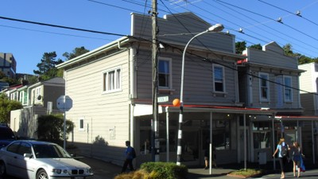
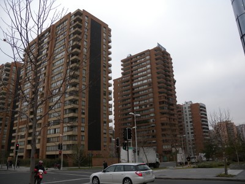

Detached building [BPD]
The building may be within a block, but it is not attached to any other building. This applies to buildings whose neighbouring buildings are spaced apart a distance equal to or more than 4% of the height of the lower building. Where buildings are spaced closer than this, but not attached, they are considered to be adjacent.


The buildings shown in black in this plan view are detached, as the two neighbouring buildings are too far away to be considered adjacent.

An example of a detached building, Vancouver, Canada (Map data ©2013 Google, DigitalGlobe, IMTCAN)

Detached building on a corner, where the neighbouring buildings are too far away to be considered adjacent, New Zealand (L. Allen).

Detached building, where the neighbouring buildings are too far away to be considered adjacent. Putu, Chile (S. Brzev).

The building in the foreground is detached, as the neighbouring buildings are too far away to be considered adjacent. Santiago, Chile (S. Brzev).